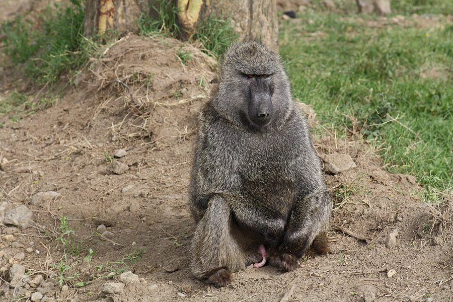
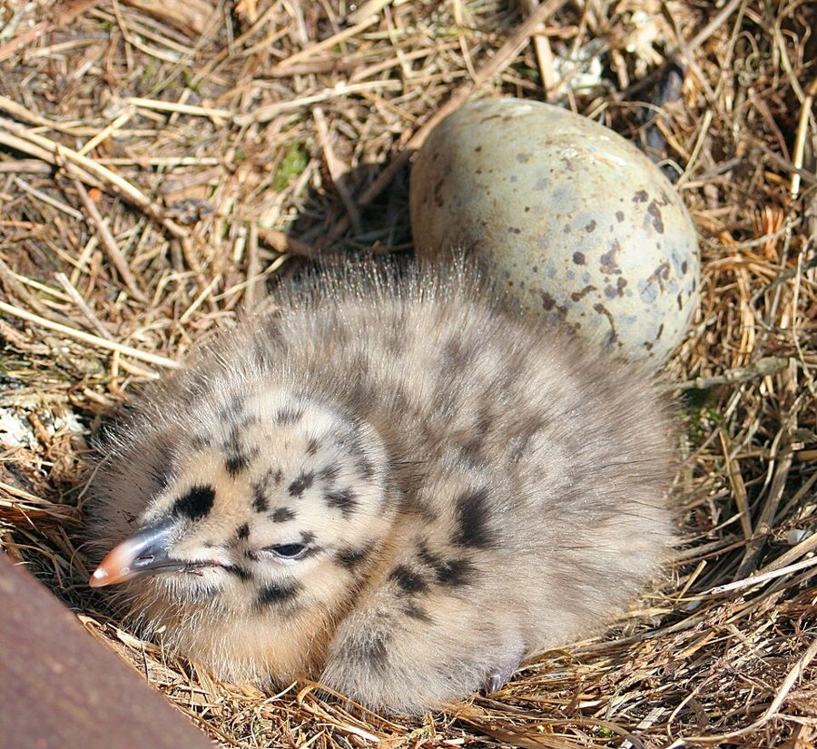
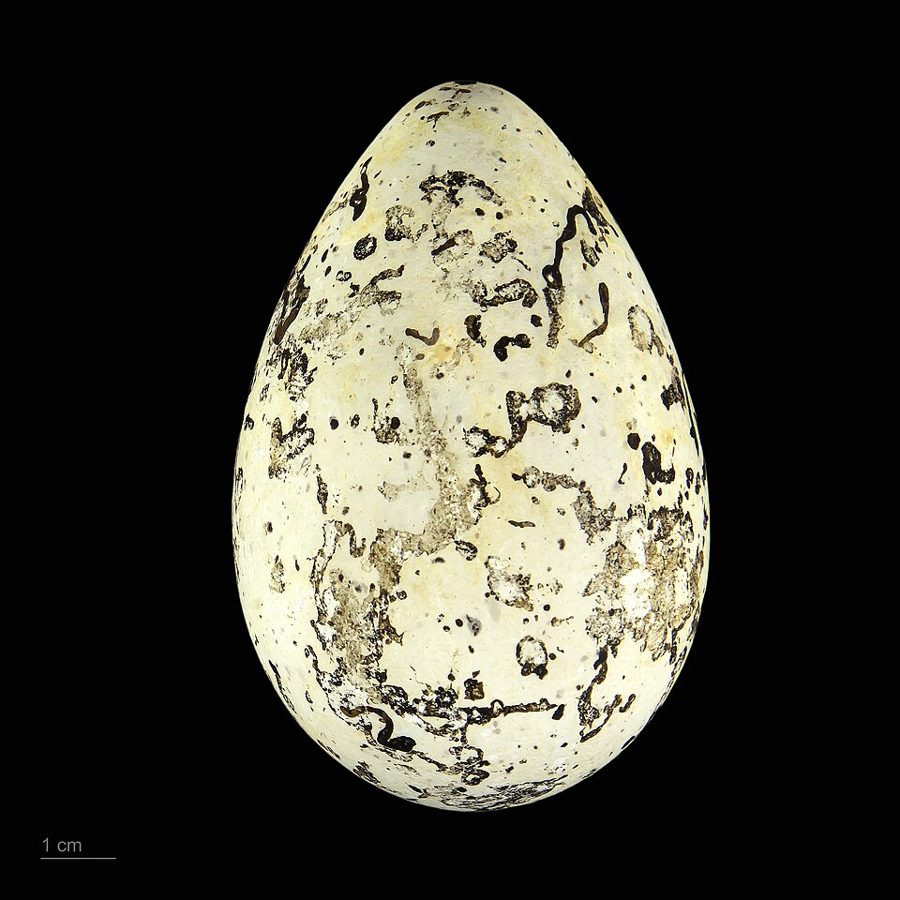

with a bit of luck
… With a bit of luck these two …
运气好的话
作者的把握程度：博物学家的估计和动物的「估计」可能差不多，但他只说运气好的话。答案留到第 50 段。
第 6 章的后半。上半页把亲属之间的账算清了：亲缘系数怎么算，救几个兄弟才划算。这半页问一个更实际的问题：动物不会查家谱，它们怎么知道谁是亲属？Dawkins 拿雏鸡、鲸、狒狒、收养孤儿的母猴、布谷鸟、海鸠和狮群，一路看简单的认亲规则什么时候灵、什么时候失灵、什么时候被骗子利用，最后引出一个新的量：「确定性」。读的时候抓两条线：「估计」和「真值」的区别，以及把握大小怎样改变谁值得帮。

上半页停在第 32 段：作者把蘑菇的例子译回基因的语言，说动物的「估计」来自祖先在平均环境里的经验。第 33 段紧接着说，这种估计会有误差。几处回指：第 40 段雏鸡的尖叫是第 4 章第 44 段讲过的；第 43 段海鸥小鸡送命，指第 1 章邻居吃小鸡的例子；第 52 段预告后面几章的骗子，第 54 段指向第 9 章，第 58 段的社会性昆虫要到第 10 章。
动物不会查家谱。亲属选择在真实的动物身上靠什么落地？
读的时候带着这几个问题。不用先找答案，读完回来对照「检查一下理解」。
这一页从一个让步开始：上半页的算式假定动物知道谁是亲属。§7 先问「是谁在估计」，博物学家还是动物，然后不急着回答，转去列动物可能遵循的几条简单规则，每条都顺手说它在什么条件下会出错；中间夹着一句关于种族偏见的推测，限定词很重，别读过头。§8 把出错分成三层：偶然的（收养孤儿）、被别的物种利用的（布谷鸟）、要靠认得才能稳住的（海鸠），讲海鸠时突然借来第 5 章的 ESS。§9 拿狮群回答 §7 开头那个悬着的问题，再提出「确定性」。§10 从确定性推出几条关于父亲、祖辈、舅舅的预测，最后转回上半页对 Wilson 的批评，读到这里会觉得跳，这是作者在给全章的术语之争收尾。
作者落在哪：动物不必知道真实的亲缘，只要遵循在平均情况下管用的规则；规则会失灵、会被骗子利用，所以要紧的是「有多大把握」。自己是最有把握的，因此自然界的自私会多于单看亲缘的预测，父亲也会比母亲投入少。
这一页是原书第 6 章的第 7–10 节。原书各章没有小标题，粗体的节名是本站起的，下面是这一节第一段开头的几个词，在电子书里搜它就能跳过去。读完打个勾。
先把这一页用到、作者默认你懂的几个概念讲一遍。讲的是概念本身，作者拿它推出什么，读原书时自己看。上半页讲过的亲缘关系指数、亲属选择、汉密尔顿法则，第 5 章的进化稳定策略，点进去看；上半页的亲缘系数模拟器可以算第 33 段的例子。
读第 33 段前的提醒：电子书写的「either (1/2) or 1/2」是用错了图，应是 1/4 或 1/2（半同胞或全同胞，同段的平均数 3/8 就是这两个数的平均）；「only I in 10」里的 I 是数字 1。算下来有效亲缘是 1/10 × 1/2 + 9/10 × 1/4 = 0.275。
动物行为学里，经验法则指动物实际遵循的简单决策规则。它不要求动物「知道」行为的目的，只要在这个物种通常遇到的环境里平均来说管用。比如「巢里的小鸟就喂」：在鸟巢彼此隔得很远的环境里，这条规则几乎总能喂到自己的孩子。代价是两种：环境一变就出错，或者被专门钻这个空子的对手利用。程序员对这种东西不陌生：缓存的淘汰策略、启发式的类型推断，平常很灵，碰上少见的边界情况，或有人故意构造输入，就失灵。要分清两层：规则本身是什么（近因），和这样的规则为什么被自然选择留下来（终极原因，见第 7 章的直接原因与终极原因）。
在这一页：第 36 段提出问题：动物遵循什么简单规则，才能间接地照顾到亲属？第 37–40 段试了几条，第 41 段起讲它们怎样失灵。
把蛋下在别的鸟的巢里，让别人替自己孵蛋、喂雏。有的鸟偶尔这样做；有的完全靠它，自己从不育雏，叫专性巢寄生，大杜鹃是最出名的一种。大杜鹃的雌鸟趁宿主离巢，很快产下一枚蛋；雏鸟孵出后会把宿主的蛋和雏鸟推出巢外，独占养父母。除了把蛋下在别的物种巢里，还有把蛋下在同类巢里的「种内巢寄生」，注 37 讲的就是这一种。巢寄生能成功，靠的是宿主的规则太简单：认的是「在我巢里」，而不是「是我生的」。译本：「寄孵鸟」指的就是这类鸟。
在这一页：第 43 段说布谷鸟是被别的鸟蓄意制造出来的母性规则失灵；第 47 段讲宿主怎样反击。
两方互相给对方施加选择压力：一方的改进让另一方的旧办法失灵，另一方也被推着改进，如此往复。最常见于捕食者和猎物、寄生者和宿主之间。和国家之间的军备竞赛一样，双方都在付出越来越高的成本，相对位置却未必有多大变化。程序员熟悉的例子是垃圾邮件和过滤器：过滤器学会认一种套路，发送者就换一种。布谷鸟和宿主是生物学教科书里的经典例子：Davies 和 Brooke 1988 年在英国剑桥郡的湿地里扮演布谷鸟，往芦苇莺巢里放各种花色的假蛋，发现芦苇莺多半留下像自己蛋的，扔掉不像的。
在这一页：第 47 段：宿主越来越会挑，布谷鸟的蛋就越来越像宿主的蛋。第 13 章还会回到军备竞赛（生命与晚餐的原则）。
作者在第 51 段提出的量，今天通行的说法是「亲缘确定性」，研究最多的是其中一种：父权确定性（paternity certainty），即雄性有多大把握孩子是自己的。它和亲缘系数是两回事：亲缘系数问「如果他真是我弟弟，我们共有某个稀有基因的概率是多少」，确定性问「他真是我弟弟的把握有多大」。把握越小，能拿来用的亲缘就越要打折扣。打个比方：亲缘系数像一笔转账的金额，确定性像收款账号没被冒充的概率，账号可能是假的，金额再大也得打折。母亲亲自生下孩子，母子关系几乎确定；父子关系要多过一关，配偶有没有和别的雄性交配，所以没那么确定。下图把这个道理推到祖辈。
在这一页：第 51 段提出，第 52–53 段用弟弟、双胞胎和「我自己」说明，第 54 段推到父亲、祖辈和舅舅。
按在书里出现的顺序排，标题前是节号。只讲到读懂这一页需要的程度。
第 35 段说，人知道谁是亲戚，是因为有人告诉我们、有名字、有婚姻和记录。注 35 补充说，本书出版以后「亲属识别」成了热门课题：动物（也包括人）辨认亲属的本事相当细，常常靠气味。作者介绍的是 1987 年出版的论文集 Kin Recognition in Animals，按注里的说法，其中 Pamela Wells 写人类的那一章认为，人认亲不只靠别人告诉，至少有间接证据表明我们也用非语言的线索，比如亲属汗水的气味。她在那一章开头引了诗人 e. e. cummings 的两行诗，作者说这两行概括了整个题目。
第 35 段说乱伦禁忌在遗传上的好处，大概是避免隐性有害基因在近亲交配时显出来。注 36 算了一笔账：有的书估计每人平均带着多达两个隐性致死基因，兄妹结合时，每一个这样的基因都会让大约八分之一的孩子死产或早夭，所以回避近亲交配的选择压力可能很强。注的后半说太远也不好，并介绍 Bateson 的实验：让日本鹌鹑在一排小橱窗后的异性里挑，它们偏爱第一代表亲，胜过亲兄妹和不相干的个体。Bateson 1982 年在《自然》上报告了这个结果。

第 39 段先讲一个常被引用的说法：成年雄狒狒会冒着生命危险保卫群体，挡住豹子。作者说这可以用亲属选择解释，雄狒狒在群里多半有不少亲戚。然后他「公平起见」补了一句：至少有一位受尊敬的权威报告的情况完全不同，豹子一来，跑在最前头的就是成年雄狒狒。书里没有点名，只说是「她」。

第 43 段说，成年银鸥认不出自己的蛋，别的海鸥的蛋、甚至实验者换进去的粗糙木头假蛋，它都照孵不误；可它认得自己的小鸡。作者的解释是：银鸥的巢彼此隔着几码，蛋滚不到邻居那里，小鸡却会乱跑，跑到邻居巢边常常送命（第 1 章讲过海鸥吃邻居的小鸡）。会不会弄混，决定了值不值得去认。

海鸠（Uria aalge）是北大西洋和北太平洋的海鸟，成群挤在悬崖的岩架上繁殖，不筑巢，一窝只下一枚蛋，直接放在光秃的岩石上。蛋的底色和斑纹个体之间差别很大。Tschanz 1959 年的研究常被引为海鸠能认出自己蛋的经典证据；2021 年的一项重复研究发现，同一只雌鸟的蛋彼此很像，不同雌鸟的蛋差得多，符合「蛋的花纹是身份标记」的说法。第 44–46 段作者拿它和银鸥对照：蛋容易滚混的地方，才值得去认。
第 48–49 段的数字来自 Bertram。他根据狮群的繁殖习性（母狮留在群里，雄狮成年后被赶出去，结成小伙流浪），估出同一狮群里随便挑两头雄狮，平均亲缘约 0.22，比半同胞略远；两头母狮约 0.15，比第一代堂表亲略近。注 38 说，Packer 和 Pusey 后来对 Bertram 提出异议：许多狮群里那两头雄狮并没有亲缘，互惠至少和亲属选择一样能解释狮子的合作。作者认为两边可能都对。后来的 DNA 研究见「对照今天」。
第 54 段作者说，在不忠很普遍的社会里，舅舅应当比名义上的父亲更照顾孩子；他说自己不知道有什么证据，希望社会人类学家能说点什么。注 40 他说这句话让他脸红：母亲的兄弟在许多文化里有特殊地位，是人类学家熟知几十年的事实；这个假说 Richard Alexander 也已先提出过，第一版后来的印次加了脚注说明。注里说这个假说已有人用人类学文献里的定量统计检验过，Alexander 本人也做过，结果支持。
按节排，每节前面是分节地图里的节名。标着「每个字都认识」的，是熟词生义、习语和反话，最容易读错。灰色的那几个字是原句里的位置，在电子书里搜它就能找到。
对着中译本（40 周年增订版）读的时候看这一节。下面是译本这几节和这一页尾注里会让人读错的地方：灰字是英文原文那一处的几个词，在英文电子书里搜它；方框里是译本的原句，在译本电子书里搜它。措辞别扭但意思没错的不收。全书的勘误汇总在译本勘误。
… would starve rather than break their …
译本：「它们对我们或其他任何人都无好处」
这一句后面原文还有一句举例：有些正统犹太教徒和穆斯林宁可饿死，也不肯破不吃猪肉的规矩。作者拿它说明人会只认规则本身。译本没有这一句。
… a misfiring of the rule for …
译本：「这种情况我们可以看作鱼群错误地运用了」
原文说的是鲸群（school 也指鲸群、海豚群）里「救溺水同伴」的规则用错了地方。鲸和海豚要浮上水面呼吸，所以才有托起同伴这回事；鱼不会淹死。
… a deliberately engineered misfiring of the …
译本：「另外一个蓄意背离母性的例子」
原文是：母性规则的失灵，而这次失灵是别的鸟故意制造出来的，制造者是布谷鸟。读译本容易以为是母鸟自己「蓄意」违背母性。
… Adult herring gulls do not recognize …
译本：「成年的鲭鸥」
herring 是鲱鱼，herring gull 通称银鸥（也叫鲱鸥），不是「鲭鸥」。
… near the nest of a neighbouring adult …
译本：「弄不好会可能走到黑头鸥的窝附近」
原文是：小鸡乱跑，会跑到邻近一只成年鸥的巢边，常常送命。第 1 章那个吃邻居小鸡的例子是黑头鸥，译本大概因此串了，这里说的是同一种鸥的邻居。
… in small related gangs or pairs …
译本：「它们成长后三三两两结成一伙」
原文说它们结成的是有亲缘的小伙或成对流浪。这个 related 要紧：同群雄狮平均亲缘 0.22 的估计就靠它，注 38 的争论争的也正是这一点。
… This fact is probably a key …
译本：「懂得这个事实就懂得在自然界中」
原文有两个限定：这个事实「大概是」理解亲代照顾为什么比手足利他常见的关键；动物「可能」把自己看得比几个兄弟还重。译本把两处都说成了定论。
… but their son may have been cuckolded.
译本：「这是因为她能识别她的女儿的儿女」
这一句后面原文还有半句：而祖母的儿子可能被戴了绿帽子。少了这半句，就看不出祖母那一层不确定从哪里来。
… just as altruistic as aunts are.
译本：「舅舅应该和舅母一样」
aunts 在这里指血亲的姑姑、姨妈。舅母是嫁进来的，和孩子没有血缘，拿她来比，这句推理就不通了。
… This often, though not always means …
译本：「常常，如果不是永远」
原文是「常常，但不总是」：孩子比父母年轻，多半但不一定意味着预期寿命更长。译本的「如果不是永远」意思是「说不定总是」，正好把限定反了过来。
… at least circumstantial evidence that we …
译本：「我们至少有强有力的证据证明」
circumstantial evidence 是间接证据、旁证，比直接证据弱。原文的意思是证据还不硬，译本说成了「强有力」。
… the selfish gene theory might expect …
译本：「这种现象的发生频率要远远高于」
原文是：自私基因理论或许会预期同种巢寄生比现在知道的还要多。只是「或许」「更多」，没有「预测」，也没有「远远」。
… social anthropologists not only have things …
译本：「原来社会生物学家对」
原文是社会人类学家，正好接上第 54 段末作者向社会人类学家求援的那句。译成社会生物学家，作者脸红的理由就没了：他是没想到人类学家早就研究透了。
Conceivably, racial prejudice could be interpreted as an irrational generalization of a kin-selected tendency to identify with individuals physically resembling oneself …— §7 第 37 段。本站译：可以设想，种族偏见或许能被解释成一种不理性的推广：本来是经亲属选择形成的、认同外貌像自己的个体的倾向……
这是全书最容易被断章取义的句子之一，要逐个看限定词：Conceivably（可以设想）、could be interpreted（或许能解释为）、irrational（不理性的）。作者在提一个一句话的推测，没有拿出证据，也没有说偏见合理；这和他在同一段说的「群体一变大，规则就会出错」是一个意思：规则在它没被选择去应付的条件下走了火。常见的两种误读，一是说「Dawkins 认为种族偏见是天生的、有道理的」，二是反过来说「他在为偏见找生物学借口」。原文两样都没说。
I am the only individual that any one of my selfish genes can be sure of.— §9 第 53 段。本站译：我是我的任何一个自私的基因唯一可以确定的个体。
这一页的核心，口气是半开玩笑的第一人称独白（第 52–53 段都用「我」替动物盘算，和第 5 章的象海豹一样只是讲解手法）。关键词是 sure：同卵双胞胎和我共有全部基因，但我只能「猜」他是不是，我对自己却是「知道」。这句常被拿来说「基因让我们自私」，作者的意思要窄得多：在亲缘只能估计的世界里，个体自私的程度应当比单看亲缘系数预测的高。
正文里的星号是 1989 年第二版加的，点了跳到书后的尾注。下面是这一页的每个星号：注里说了什么，值不值得现在就点开。英文是星号前紧挨着的几个词，在电子书里搜它就能找到那个星号。
… estimating who their close relations are.*
注里说，本书出版后研究动物怎样认亲的工作大量出现，动物（也包括人）常靠气味辨认亲属；人认亲至少也有间接证据表明会用汗味这类线索（见「书里的人和研究」）。最后一句预告下一条注：认亲还为了在近亲和远亲之间找交配的平衡。短，可以点开。译本把这个星号放在了下一段第一句的中间。
… many anthropologists do not like this explanation.)*
注很长，分三层：先算账，说明兄妹交配可能是灾难性的，所以回避近亲交配的选择压力可能很强；再驳不喜欢这个解释的人类学家，用了一个比方：车门有锁，不等于点火开关的锁就不是防盗用的；最后讲 Bateson 的鹌鹑偏爱表亲，以及狮子、黑猩猩靠一方离群的规矩避免近亲交配。值得读，汽车锁那段是作者典型的论辩手法。
… own species, this is effective.*
正文说宿主不会被同种的鸟寄生，所以「认本物种的蛋」这招有效。注里说这对多数鸟大概成立，但同种巢寄生正在越来越多的物种里被发现，尤其是有了分子手段鉴定亲缘以后；自私基因理论或许会预期它比已知的更常见。一段话，可跳。
… naturalist might end up rather the same.*
Packer 和 Pusey 质疑 Bertram：许多狮群里的两头雄狮并无亲缘，互惠利他至少同样可能。作者说两边可能都对，并给了一个连接：第 12 章讲，针锋相对的互惠要先凑够一定数量的互惠者才能起步，亲属天然彼此相像，可能正好提供了这个起点。值得读，它把这一章和第 12 章接上了。
… his life no less than my own.*
注里把「确定性」往前推了一步：如果母亲确定只和你父亲生孩子，她就是一台生产亲兄弟姐妹的机器，在遗传上和同卵双胞胎、和你自己一样值钱。父亲死了也不要紧的情形是终生储精的昆虫，比如一生只在一次婚飞里交配的蚂蚁。作者由此提出：终生储精对社会性昆虫的起源，可能和单倍二倍性一样重要。值得读，接第 10 章。
… anthropologists might have interesting things to say.*
作者说这句话现在让他脸红：舅舅效应在许多文化里是人类学家熟知几十年的事实，不需要他「预测」；不忠的社会里舅舅比「父亲」更利他这个具体假说，Richard Alexander 也已先提出过。这个假说后来用人类学文献的定量统计检验过，结果支持。一定要点开，很短。
读完这一页的几节再看。下面是作者在这几节里的论点，由本站按论点重新组织，不按原书的顺序；每条下面是依据所在的段落，拿不准就回书里那几段再读一遍。
真实的亲缘通常只能当作平均数来估计。动物靠基因给的简单规则行事，这些规则不需要懂得行为的最终目的，只要在物种通常的环境里平均来说对亲属有利：对长得像的好、对碰到的同类好、跟着同窝的叫声去吃食。条件一变，规则就出错，海豚救溺水的人就是一例。
§7 第 33、36–40 段收养孤儿多半是规则失灵，大概罕见到自然选择「懒得」去修；布谷鸟则专门利用宿主的规则，双方由此陷入军备竞赛。海鸠如果大家随便孵别人的蛋，少下蛋、不孵蛋的骗子会扩散，惩罚也挡不住，因为分不清蛋就会误伤自己，所以认蛋、只孵自己的蛋才是 ESS。
§8 第 41–47 段动物的「估计」和博物学家的估计可以差不多：只要狮群的情况世代如此，自然选择会青睐和平均亲缘相称的友好程度。作者由此提出，除了亲缘系数，还要考虑把握有多大。亲子在遗传上不比兄弟更近，却更确定；自己最确定。因此他预期自然界里个体自私的程度会超过单看亲缘的预测。
§9 第 48–53 段母亲比父亲有把握，所以父亲对孩子的投入应少于母亲；外祖母应比祖母更利他，外祖父和祖母一样有把握；舅舅应比叔伯更关心外甥，不忠普遍的社会里甚至超过名义上的父亲。作者 1976 年说不知道有证据。（1989 年的尾注改成了：舅舅效应人类学家早就熟知，这个假说 Alexander 也先提出过，已有定量检验支持。）
§10 第 54 段，注 40亲子之间更常见的是父母照顾孩子，原因除了确定性，还有父母更有能力，孩子预期寿命多半更长。作者认为，所有育幼行为和乳腺、育儿袋这些器官都是亲属选择在起作用；说亲属选择缺少实例，是把它误当成专讲亲子以外的关系，他认为这种误解 Wilson 也有。
§10 第 55–59 段合起来：这半页把上半页的账本放回真实世界：动物不认账本，只认规则，规则会出错、会被骗。由此作者多出一个量，「确定性」，他认为它大概是父母照顾比手足照顾常见的关键，也由此预期自然界会比纯粹的亲缘计算更自私一些。
第 6 章合起来：自私的基因是散在许多身体里的同一段 DNA 的全部拷贝，所以帮别的身体里的拷贝，也是基因的自私。上半页（06a）讲账怎么算：亲属共有稀有基因的概率可以算成亲缘系数，利他行为能扩散的条件是代价小于受益者的收益乘以亲缘系数，动物不必真会算。下半页讲账怎么落地：动物只能按规则估计，规则会失灵、被利用，所以除了亲缘，还要算有多大把握。贯穿两页的是作者的一个立场：亲代照顾和手足利他在遗传上是一回事，都是亲属选择。
这本书 1976 年出版。下面挑出这一页里能被后来的研究检验的说法，分「书里 / 当时 / 今天」三栏，并给一个结论。结论判的是标题里「书里的说法：」后面那一句。全书的这一节汇总在对照今天。
读完作者的论点，再看它站不站得住。每一块摆出三样：主流怎么看，作者怎么看，本站的评论。最后一句是本站对这一页的总体判断。
主流看法：动物确有「长得像就当亲戚」的认亲机制。但人按种族分类，今天更常见的演化解释是把它看作识别联盟的心理机制的副产品：Kurzban、Tooby 和 Cosmides 2001 年的实验发现，给出另一条更明显的「谁和谁一伙」的线索，几分钟内人们按种族分类的倾向就明显减弱；2014 年一项预注册的重复实验得到同方向、但更弱的效应。
作者的看法：一句话的推测，用 Conceivably、could be interpreted 和 irrational 三重限定，紧跟在「群体变大，认亲规则就会出错」之后（第 37 段）。
本站的评论：作者没有为偏见辩护，他明说这是不理性的推广，读者不必替他担这个罪名。可这句推测本身也很弱：书里没有任何人类数据，「外貌相似」在家族内部是亲缘线索，推到几百万人的种族就不再是了，这正是他自己说的「条件变了，规则出错」。把它当作一个提出来待检验的猜想，比当作解释稳妥；后来的研究提示，起作用的更可能是「同伙」而不是「亲戚」的线索。
主流看法：在遗传逻辑上没有争议：汉密尔顿法则对子女和兄弟一视同仁。但今天的教科书多把广义适合度拆成两半：通过自己后代得到的「直接适合度」和通过其他亲属得到的「间接适合度」，「亲属选择」常专指后一半。照这个习惯，父母照顾子女算直接适合度。
作者的看法：亲代照顾和手足利他在遗传上等价，所有育幼行为都是亲属选择的例子；把亲属选择限定在亲子以外，是 Wilson 式的误解（第 57–59 段，上半页第 21 段）。
本站的评论：要把两件事分开。论道理，作者是对的：汉密尔顿的框架本来就把子女和旁系亲属放在同一个算式里。论用词，今天的主流习惯反倒接近他批评的窄用法，只是理由不同：不是认为父母照顾另有一套原理，而是为了把「帮自己孩子」和「帮别人孩子」分开记账，方便测量。读者读到这里不必选边，知道这是术语之争、不是事实之争就够了。
主流看法：父权确定性是行为生态学里公认的一个因素，但不是雌雄照顾差异的全部原因（Queller 1997；Griffin 等 2013 的元分析）。人类祖辈的数据大体符合「外祖母最多」，细节和书里的推论有出入。
作者的看法：真亲缘不如估计要紧，确定性是理解亲代照顾多于手足照顾的「大概的」关键；自私会多于亲缘预测（第 51–53 段）。他对人类的预测坦白说没有证据，1989 年又为不知道人类学家早有研究而脸红（第 54 段，注 40）。
本站的评论：这是这一章最有新意、也最经得起检验的一步：从一个干净的概念推出几条能拿数据核对的预测，后来多半在方向上得到支持。弱的地方是「自私程度会超过亲缘的预测」这一句，很难量化，书里也没说怎么检验。作者处理证据的态度值得学：自己先说「我不知道有证据」，被指出前人早有研究就公开认账。
本站的总体看法：这半页把亲属选择从算式拉回了真实动物，经验法则、规则失灵、军备竞赛、确定性，这几个想法后来都成了行为生态学的常用工具，值得带走。要打折扣的是从动物一步跳到人的那几句：种族偏见的推测没有数据，祖辈和舅舅的预测方向对、细节要改。
先在心里答，再点开。答错的那题，回书里把对应那一节再读一遍。
十分之一的可能是全同胞（1/2），十分之九是半同胞（1/4），按概率加权：1/10 × 1/2 + 9/10 × 1/4 = 0.05 + 0.225 = 0.275。电子书这一段把 1/4 印成了 1/2，把 1 印成了 I，按这里的算法读。
鲸群里随便一个成员多半是亲戚，所以「救溺水的同伴」这条规则平均来说帮到亲属。规则对「溺水的同伴」的定义很粗，大概是「在水面附近挣扎、呛水的长条东西」，人恰好符合，规则就走了火。
前提是海鸠分不清蛋。没人孵的那几枚，可能是骗子的，也同样可能是老实鸟自己的；骗子下的蛋多，留下的后代还是多。唯一的办法是认出自己的蛋、只孵自己的，也就是不再利他。
因为我只能猜他是我的双胞胎（长得像也可能只是碰巧），却确知自己带着自己的全部基因。亲缘的认定可能出错，也可能被骗子利用，自私的基因在「确定」这一点上占了大便宜。
每位祖辈到孙辈要经过两层亲子关系。外祖父这条线：他和女儿那一层不确定，女儿和她孩子那一层确定。祖母这条线：她和儿子那一层确定，儿子和孩子那一层不确定。两边都是一层确定、一层不确定。
作者给了两个原因：父母年长，有能力帮忙，婴儿想帮也帮不上；孩子比父母年轻，多半（不总是）预期寿命更长，为寿命更短的一方牺牲不划算。
用一句话说这一页，写给一个没读过的人。
想一想：你的工作或生活里，有没有哪条「经验法则」平时很灵，换了环境就失灵，甚至被人专门钻了空子（比如「内网来的请求都可信」「熟人介绍的就靠谱」）？你是怎么发现的，又是怎么改的？
读过又忘了，从这里想起来。挑的是这一页最值得记住的模型、动物和说法，不按原书顺序；每条后面是节号，想细看就回书里那一节。全书各页的这一节都收在全书回顾。
一句话：动物不会查家谱，只会按平均情况下管用的规则认亲；规则会失灵、会被骗，所以把握越大越值得帮，而最有把握的永远是自己。
鲸群里随便一个同伴多半是亲戚，「托起溺水的同伴」就划算。规则认的是「水面上挣扎的长条东西」，于是人也被救了。
§7大家随便孵别人的蛋，骗子就多下蛋不孵；惩罚也没用，因为分不清蛋会误伤自己。认蛋、只孵自己的，才是 ESS。
§8宿主的规则是「巢里的小鸟就喂」。宿主学会挑本物种花纹的蛋，布谷鸟的蛋就越长越像，作者叫它进化上的军备竞赛。
§8同卵双胞胎和我共有全部基因，但我只能猜他是，却确知我是我。所以作者预期自然界会比单看亲缘预测的更自私。
§9母亲确定、父亲可能被骗：外祖母应比祖母更利他，舅舅应比叔伯更关心外甥。作者 1989 年脸红：人类学家早就知道舅舅效应。
§10